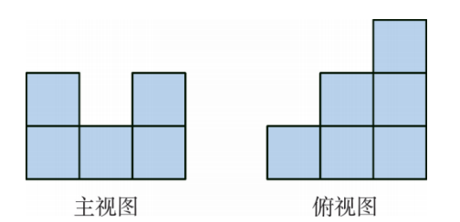
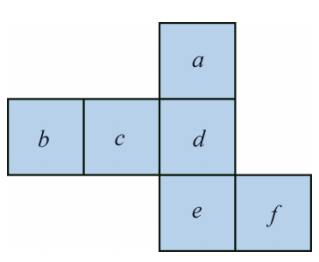
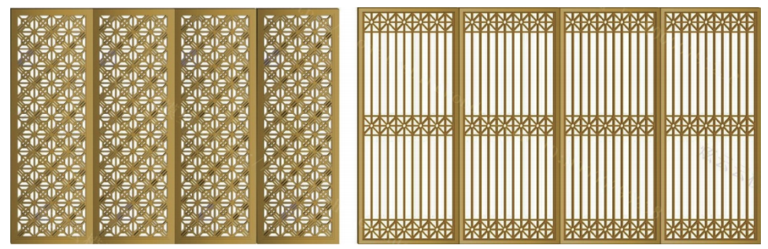
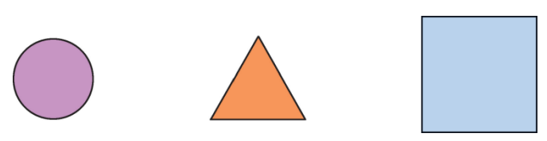
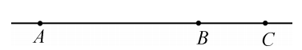
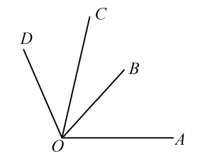
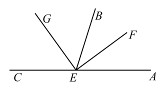
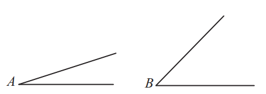
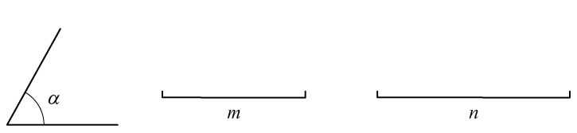
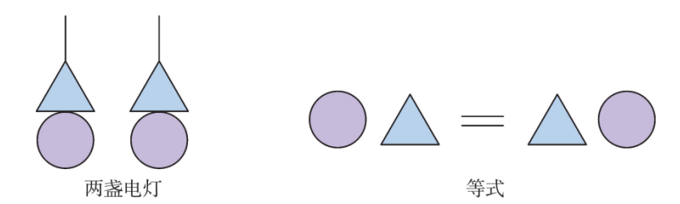

| 图形的初步认识 | |
| 立体图形 • 柱体（棱柱、圆柱） • 锥体（棱锥、圆锥） • 球体 • 多面体 |
平面图形 • 多边形（三角形、四边形等） • 圆 • 点、线、角 |
| 视图与投影 • 平行投影、中心投影 • 三视图（主视图、俯视图、左视图） • 由视图到立体图形 |
表面展开图 • 正方体展开图（11种） • 棱柱、圆柱、圆锥展开图 |
| 点、线、角 • 线段、射线、直线（两点确定一条直线，两点之间线段最短） • 角的概念与度量（度、分、秒换算） • 角的比较与运算（角平分线、余角、补角） |
|
※ 立体图形与平面图形相互转化：视图、展开图、从不同方向看
几个相同的正方体叠合在一起，该组合体的主视图与俯视图如图所示，那么组合体中正方体的个数至少有几个？至多有几个？

根据主视图和俯视图分析：最少需要 6 个小正方体，最多需要 8 个小正方体。
如图是正方体的表面展开图，如果 \(a\) 在后面，\(b\) 在下面，\(c\) 在左面，试说明其他各面的位置。

根据正方体展开图的相对面关系：\(a\) 与 \(f\) 相对，\(b\) 与 \(d\) 相对，\(c\) 与 \(e\) 相对。
已知 \(a\) 在后面，则 \(f\) 在前面；\(b\) 在下面，则 \(d\) 在上面；\(c\) 在左面，则 \(e\) 在右面。
已知线段 \(AB = 10\ \mathrm{cm}\)，点 \(C\) 在直线 \(AB\) 上，且 \(AC = 4\ \mathrm{cm}\)，点 \(M\)、\(N\) 分别是 \(AC\)、\(BC\) 的中点，求 \(MN\) 的长。
解： 分两种情况讨论：
情况1： 点 \(C\) 在线段 \(AB\) 上，则 \(BC = AB - AC = 6\ \mathrm{cm}\)。
\(MC = \frac{1}{2}AC = 2\ \mathrm{cm}\)，\(CN = \frac{1}{2}BC = 3\ \mathrm{cm}\)，
∴ \(MN = MC + CN = 5\ \mathrm{cm}\)。
情况2： 点 \(C\) 在线段 \(AB\) 的延长线上，则 \(BC = AC - AB?\) 需重新分析：
若 \(C\) 在 \(AB\) 延长线上，则 \(AB = 10\)，\(AC = 4\) 不可能，因为 \(AC < AB\)。所以只可能 \(C\) 在 \(BA\) 延长线上：
此时 \(BC = AB + AC = 14\ \mathrm{cm}\)，\(MC = \frac{1}{2}AC = 2\ \mathrm{cm}\)，\(CN = \frac{1}{2}BC = 7\ \mathrm{cm}\)，
∴ \(MN = CN - CM = 5\ \mathrm{cm}\)。
结论： \(MN = 5\ \mathrm{cm}\)。
(1) 一个角与它的余角相等，这个角是怎样的角？
(2) 一个角与它的补角相等，这个角是怎样的角？
(3) 互补的两个角能否都是锐角？能否都是直角？能否都是钝角？
(1) 设这个角为 \(x\)，则 \(x = 90^{\circ} - x\)，解得 \(x = 45^{\circ}\)，所以这个角是 \(45^{\circ}\)。
(2) 设这个角为 \(x\)，则 \(x = 180^{\circ} - x\)，解得 \(x = 90^{\circ}\)，所以这个角是直角。
(3) 不能都是锐角（因为两个锐角和小于 \(180^{\circ}\)）；能都是直角（\(90^{\circ}+90^{\circ}=180^{\circ}\)）；不能都是钝角（两个钝角和大于 \(180^{\circ}\)）。
1. 如图是两幅精致的屏风图案，其中有不少是我们已认识的平面图形，试写出它们的名称。

2. 如图是一些立体图形的视图，但是观察的方向不同，试说明它们可能是哪种立体图形的视图。

第一幅图可能是球或圆柱的视图；第二幅图可能是三棱柱或三棱锥或四棱锥的视图；第三幅图可能是三棱柱或圆柱或四棱柱的视图。
4. 如图，\(A, B, C\) 三点在同一条直线上，则关于线段 \(AB, BC, AC\) 有下列等式成立：
(1) \(AB + BC = \_\_\_\) (2) \(AC - BC = \_\_\_\) (3) \(AC - AB = \_\_\_\)

(1) \(AB + BC = AC\) (2) \(AC - BC = AB\) (3) \(AC - AB = BC\)
5. 在纸上画出四个点（其中任意三点不在同一条直线上），经过每两点用直尺画一条直线，一共可以画几条？试画出所有的直线。
一共可以画 \( \frac{4 \times 3}{2} = 6 \) 条直线。图形略。
6. 计算下列各题：
\((1)\ 23^{\circ}30^{\prime} = \underline{\qquad}^{\circ},\quad 13.6^{\circ} = \underline{\qquad}^{\circ}\underline{\qquad}^{\prime}\)
\((2)\ 52^{\circ}45^{\prime} - 32^{\circ}46^{\prime} = \underline{\qquad}^{\circ}\underline{\qquad}^{\prime}\)
\((3)\ 18.3^{\circ} + 26^{\circ}34^{\prime} = \underline{\qquad}^{\circ}\underline{\qquad}^{\prime}\)
\((4)\ 12^{\circ}17^{\prime} \times 4 = \underline{\qquad}^{\circ}\underline{\qquad}^{\prime}\)
(1) \(23.5^{\circ},\ 13^{\circ}36^{\prime}\)
(2) \(19^{\circ}59^{\prime}\)
(3) \(44^{\circ}52^{\prime}\)（或 \(44.866...^{\circ}\)）
(4) \(49^{\circ}8^{\prime}\)
7. 根据图形填空：
(1) \(\angle AOC = \_\_\_\_ + \_\_\_\_\)
(2) \(\angle AOC - \angle AOB = \_\_\_\_\)
(3) \(\angle COD = \angle AOD - \_\_\_\_\)
(4) \(\angle BOC = \_\_\_\_ - \_\_\_\_\)
(5) \(\angle AOB + \angle COD = \_\_\_\_ - \_\_\_\_\)

(1) \(\angle AOB + \angle BOC\)
(2) \(\angle BOC\)
(3) \(\angle AOC\)
(4) \(\angle AOC - \angle AOB\) 或 \(\angle AOC - \angle AOB\)
(5) \(\angle AOD - \angle BOC\)
8. 如图，\(EF, EG\) 分别是 \(\angle AEB\) 和 \(\angle BEC\) 的平分线，求 \(\angle FEG\) 的度数，并写出 \(\angle FEB\) 的余角。

\(\angle FEG = \frac{1}{2}(\angle AEB + \angle BEC) = \frac{1}{2} \times 180^{\circ} = 90^{\circ}\)；\(\angle FEB\) 的余角是 \(\angle GEB\)（或 \(\angle BEG\)）。
9. 如图，已知 \(\angle A\) 和 \(\angle B\)，利用尺规作图作 \(\angle C\)，使 \(\angle C = \angle A + \angle B\)。

作法：①作射线 \(O'C\)；②以 \(O\) 为圆心，任意长为半径画弧交 \(\angle A\) 两边于两点，以 \(O'\) 为圆心相同半径画弧交 \(O'C\) 于一点；③以该点为圆心，以 \(\angle A\) 两交点间的距离为半径画弧，交前弧于一点，过该点作射线 \(O'D\)，则 \(\angle CO'D = \angle A\)；④类似地，以 \(O'\) 为顶点，以 \(O'D\) 为一边，在外部作 \(\angle DO'E = \angle B\)，则 \(\angle CO'E = \angle A + \angle B\)。
16. 一个直立的三棱柱的俯视图是一个三角形，如图，已知这个俯视图的1个内角等于 \(\angle \alpha\)，夹该角的两条边长分别等于线段 \(m\) 和 \(n\)，试利用尺规作图作出这个俯视图。

17. 请以给定的图形（两个圆、两个三角形、两条平行线段）为构件，尽可能多地构思独特且有意义的图形，并写上一两句贴切、诙谐的解说词。如图就是符合要求的两个图形。你还能构思出其他图形吗？比一比，看谁构思得多。

抽象思想： 从现实物体中抽象出几何图形（柱体、锥体、球体、点、线、面）。
分类思想： 将立体图形按形状分类，将角按大小分类。
转化思想： 立体图形与三视图、展开图之间的相互转化；多边形分割为三角形。
数形结合： 用数量（角度、长度）刻画几何图形，通过计算解决问题。
分类讨论： 线段中点问题中考虑点在不同位置的情况。
“抽象”是数学最核心的思想之一。当我们看到生活中的实物，比如金字塔、足球、书本，数学家用“抽象”的眼光去掉颜色、材质、重量等非几何属性，只留下形状、大小、位置关系，就得到了几何图形。正是这种抽象，让数学能够跨越不同的实物，研究普遍性的规律。例如，无论是什么材料做的长方体，我们都用同一个公式计算体积。本章中，我们从物体抽象出立体图形，从立体图形抽象出视图和展开图，又从复杂图形抽象出点、线、角等基本元素。抽象让我们能够由浅入深、由表及里地认识世界。
✨ 从具体到抽象，用数学的眼光看世界 ✨